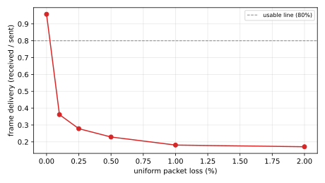
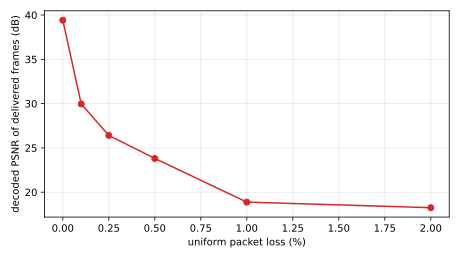

With loss recovery off, a lost packet corrupts VP8 until the next keyframe (60 frames here), so packet loss should break delivery at a low rate. On a fixed 5 Mbps / 20 ms link, as uniform iid loss rises from 0 to 2 percent, frame delivery (frames the viewer reconstructs over frames the camera sent) should stay high at low loss and collapse past some rate, marking a degeneration boundary. PSNR of the frames that do arrive is reported alongside but is not the boundary signal, since the survivors stay clean. If delivery holds across the range, the system tolerates up to 2 percent loss here.
Without loss recovery, the system cannot tolerate even 0.1% packet loss. Frame delivery falls from 96% at 0% loss to 36% at 0.1%, 28% at 0.25%, 23% at 0.5%, 18% at 1%, and 17% at 2%. The usable line (80% delivery) is already crossed below 0.1%, so the recovery-off loss boundary is effectively zero.
{'Both signals degrade, delivery first. PSNR of the frames that do arrive also falls (39.4 dB at 0% loss, then 30.0, 26.4, 23.8, 18.9, 18.3 dB) because corruption propagates into some delivered frames, but the dominant effect is missing frames, not blurry ones': 'a lost packet corrupts VP8 until the next keyframe (6 s here), so each loss costs many frames.'}
This is a direct, quantified argument for loss recovery (a Goal 1 capability). NACK/RTX or FEC should move this boundary by orders of magnitude; re-running with recovery on is the natural follow-up and would isolate SCReAM's controller-level loss tolerance from VP8's raw fragility. Next to H9's delay boundary (~200 ms, graceful), the loss boundary is a cliff at zero.
Limitations
Recovery is off (nack/pli/fec false), matching H6-H9. This measures the raw loss sensitivity of SCReAM + VP8 with no retransmission; with NACK/RTX on the boundary would move substantially, and that contrast is itself worth a follow-up.
Single arm (only scream|gcc exist, no bare sender), so the boundary is read off SCReAM's own quality-vs-loss curve.
Uniform iid loss is swept {0, 0.1, 0.25, 0.5, 1, 2} %; a bursty (Gilbert-Elliott) loss model would degrade differently at the same mean rate.
{'Workload-specific (realmotion-avi, 1280x1024 MJPEG, 10 fps, 60 s), 4000 kbps ceiling, keyframe interval 60 frames. 3 reps per cell. Boundary signal is frame delivery': 'usable line at 80% delivery, collapse below 50%.'}
Figures

Frame delivery vs uniform packet loss (recovery off). The boundary is where delivery falls through the usable line — most frames stop arriving.

PSNR of the frames that do arrive. It stays high because the survivors are clean; the loss damage shows up as missing frames (delivery), not blur.
Tables
Delivery and PSNR by packet loss
metric
0.0%
0.1%
0.25%
0.5%
1.0%
2.0%
frame delivery
0.957
0.362
0.278
0.229
0.181
0.171
PSNR of delivered (dB)
39.42
29.96
26.41
23.81
18.88
18.25
Experimental setup
h10-loss-boundary
SCReAM loss-boundary sweep on a fixed 5 Mbps / 20 ms link, recovery off.